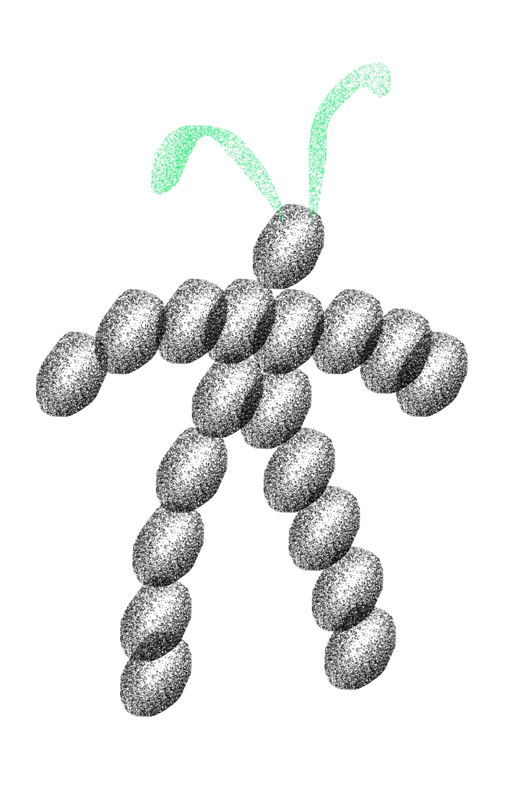
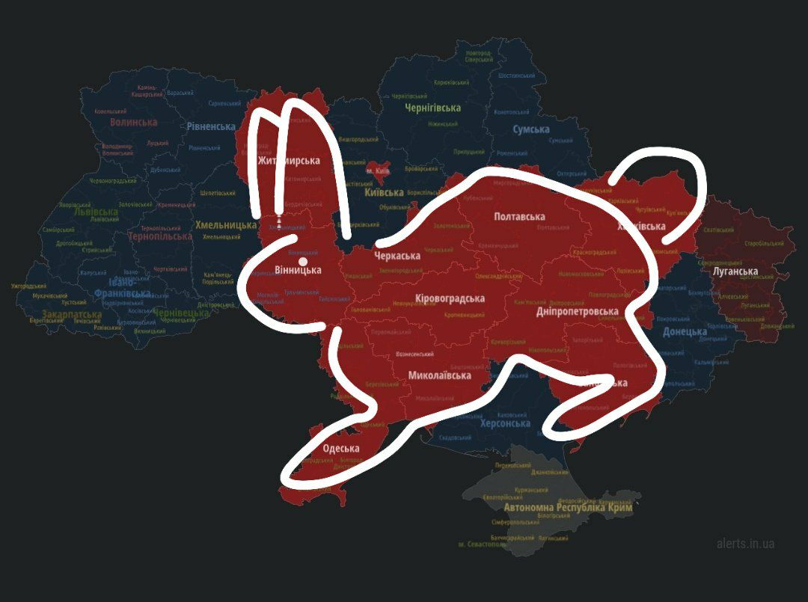
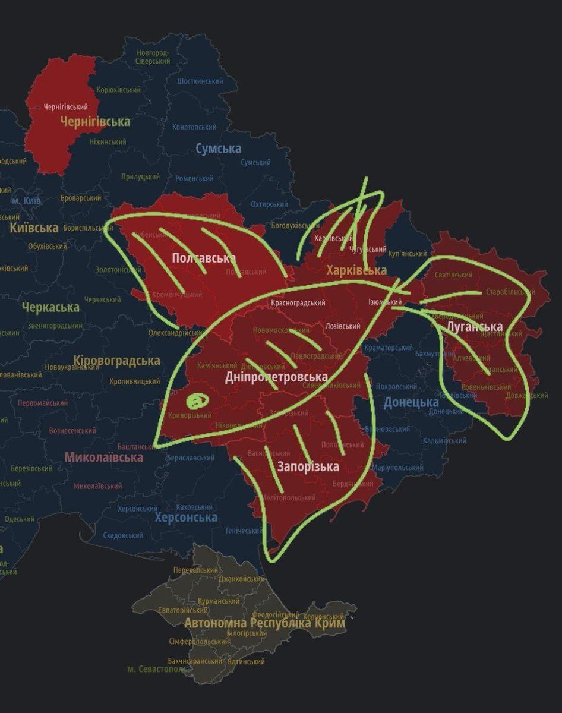

What is happening here?

The semester started from type-drawing which lead to amazing world of glyphs.
Walking is falling.
In November we had a choreography workshop, where i learnt how to loose control. We unlearned and overcame our natural instinct not to fall, and tried to allow others to catch us. We learned to look into the eyes of others, not to hide our look. We were seeing how we changed immediately as a group after that.

Escape from Freedom / Authorität, theory seminar
As my head was full with many questions and thought about politics and reality we live in, I decided to take part in philosophy seminar by Barbara Kuon focusing on the problem of Authority. We talked about Erich Fromm. In his book he says that freedom comes with another, often overlooked side. Being free also means having to take responsibility. It also means being more isolated and alienated from others.Ways to escape:
During this semester I found a joy of unwinding in playing ping-pong!


In January he had a 4-day workshop where we created a book from our imaginary biographies. You can read mine here. Imagining future is quite difficult for me, escpesially now.
This website is still in progress (as well as me processing two paralel realities)...
Meanwhile in Kyiv
Chat with Mum
⚠️⚠️Time to Be Real hide in a shelter! Air raid siren!⚠️⚠️
XXX
 At some point people in Ukraine start to draw cute animals on the map of current air raid alerts. I want to document the vernacular design practises of wartime. This shows how Ukrainians adapt and handle these stressful situations with humour.